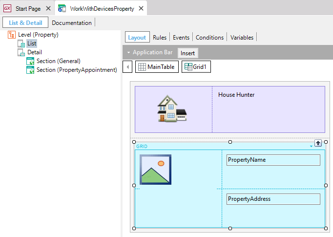

Work With for Smart Devices List Node
The objective of the List Node is to show data, how it is displayed and how it interacts with the server. In general, the data list is made up of the list of attributes to be displayed together with the orders and filters. For each List node defined in the Work With for Smart Devices Pattern instance, a window is generated to the right containing the following information: Work With and Panel for Smart Devices tabs.  In execution time (Android) the List is shown as follow: See Also
Videos
|